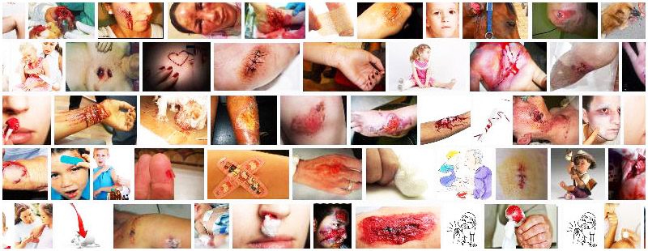

Se entiende por herida a la solución de continuidad de la piel, que son causadas por agentes externos en las estructuras anatómicas y según las características de cada lesión.
Las heridas serias e infectadas necesitan atención médica de primeros auxilios y visitas al doctor más adelante. Debe buscar atención médica si la herida es profunda, si no puede cerrarse por sí sola, si no puede detener la hemorragia o limpiarla o si no se cura.
Clasificacion de las Heridas
Las Heridas pueden clasificarse de la siguiente manera:

La herida por incision es causada mediante objetos afilados, que generan daño en piel, generalmente con una baja disrupción del aporte sanguíneo. Sanan rápidamente, en general por primera intención en caso de ser suturada. La herida tiene bordes netos.

Causada por objetos capaces de superar la fuerza de cohesión del tejido. Es una laceración en la cual las capas de piel se separan del tejido subyacente, acompañadas de una revascularización significativa de la piel y el tejido blando. La lesión tendrá bordes dentados e irregulares, en el contexto de una piel moteada en donde el relleno capilar será difícil de ver.

La fuerza de aplastamiento genera muerte celular inmediata y daño del suministro de sangre subyacente al tejido. Esto suele asociarse a avulsión de nervios y vasos sanguíneos, lo que se asocia a un mal pronóstico de reparación y revascularización de la herida.
Causada por el contacto de la piel con una fuente de calor, la cual puede provenir de variadas fuentes, entre las más comunes están fuegos/llamas, escaldaduras y objetos calientes. Las quemaduras tienen su propia clasificación basada en la profundidad, la cual se evalúa mediante la apariencia, palidez a la presión, dolor y sensación del paciente.
Causada por alteración en el revestimiento epitelial. Su patogénesis se basa en una alteración gradual de los tejidos por una etiología/patología interna. Se clasifica como una herida crónica.
Es la Herida que abarca epidermis y dermis, afectando solamente el estrato de la piel. Generalmente cicatrizan de forma completa e íntegra, sin dejar cicatriz.
Heridas que pueden abarcar desde la epidermis hasta la hipodermis, pudiendo incluso lesionar la fascia superficial ubicada entre el tejido adiposo y el músculo.
Es la Herida que compromete el espesor desde la epidermis hasta el músculo, pudiendo lesionar vasos sanguíneos y/o nervios de mayor calibre. Estas tienen alcance hasta fascia profunda de revestimiento que reviste el compartimiento muscular, pero no de la fascia profunda subserosa.
Herida que abarca desde la epidermis hasta la fascia profunda subserosa que cubre las paredes internas musculo esqueléticas y forma el peritoneo. Estas comunican el medio externo con alguna cavidad corporal, definiéndose por el nombre de la cavidad comunicada. Ejemplo: Herida penetrante abdominal, torácica o craneal.